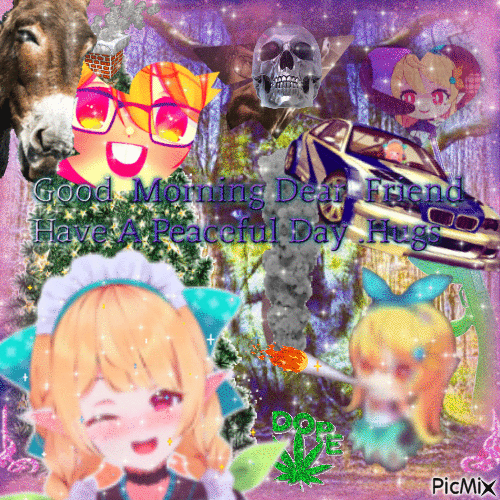

ВАЗ-21099
- 1.5 70лс MT
- Занижение: Запил 3 витка в круг
- Распорка: перед
- Фильтр нулевого сопротивления
- Рулевое колесо MOMO
- ESCAPE фонари
- Носовая часть автомобиля от (ВАЗ) 2114
- Основная боевая машина
- Выбыла в связи с ДТП, не активна

Я ебал github с его мудоконченными репозиториями, соре. Свою восстановить хотя бы до конца лета, а пока на жигулях. Может и их пока по колупаю. Вот вам посхалко со старой версией сайта xD

У каждой истории есть начало

Написать говно
Время: вперёд – реверс